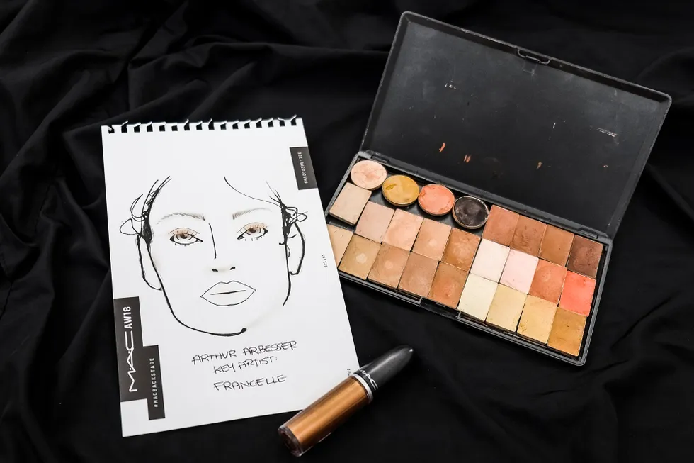

Las grandes tendencias de maquillaje global que marcarán 2022

Adelantarse a las tendencias dependerá de ti, pero estamos seguros de que cuando eches un vistazo a esta hoja de ruta, vas a querer probarlas hoy mismo. Hace unas semanas, desde MAC cosmetics, bajo la genial y siempre certera batuta de Baltasar González Pinel, su director artístico, se presentaron las que prometen ser las tendencias globales que marquen el año en el maquillaje. Las resumieron en 4 grandes bloques de ideas en las que el color va a ser el absoluto protagonista. Y no sólo el color, sino también la apuesta por lo atrevido, por cambiar, por embellecer lo natural y elevarnos. Y si estás decidida a que 2022 va a ser diferente también para ti, empieza por seccionar al detalle cuál es el paraguas de idea que va a cubrir tus ideas la próxima vez que saques tus brochas.
Tint Trend
La tendencia que han denominado ‘TINT’ engloba no sólo una forma de maquillarse, sino más bien habla y pone en valor esa gama cromática que pone el foco en colorete y labios para embellecernos. Su color central, el rojo.
Bold Trend
Para Baltasar, ’Bold’ es COLOR. Pero un color especial, de inspiración ochentera pasado por el filtro del selfie moderno. Un color actualizado, muy técnico, pero no inaccesible.
Los colores
La tendencia va a explotar los azules ultramar, los verdes esmeralda, magentas, los dúos cromáticos, colores holográficos, nacarados y metales. Vamos, toda una bomba de relojería que tiene ganas de llenar de color las miradas.